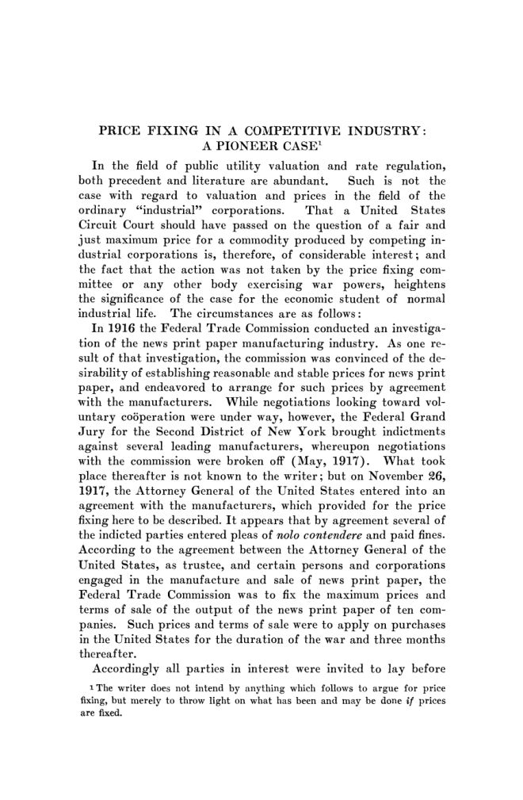

Haney, 1919: quando um tribunal fixou o preço do papel
Leitura: 8 min
Lewis H. Haney examina como a Federal Trade Commission e um tribunal federal fixaram o preço máximo do papel de imprensa em 1918 e critica a aplicação, a uma indústria concorrente, dos princípios usados para os serviços públicos.


Em 26 de novembro de 1917, o procurador-geral dos Estados Unidos assinou um acordo com fabricantes de papel de imprensa que tinham sido indiciados por um grande júri federal de Nova York. Pelo acordo, a Federal Trade Commission fixaria os preços máximos e as condições de venda da produção de dez empresas, durante a guerra e três meses depois. Se os fabricantes discordassem, o caso iria ao tribunal federal de apelação do Segundo Circuito, como árbitro. Alguns dos indiciados declararam não contestar a acusação e pagaram multas.
Lewis H. Haney, de Washington, descreve o episódio no número de março de 1919 da American Economic Review. O interesse está no ineditismo: na valoração e na regulação de tarifas dos serviços públicos, precedentes e literatura eram abundantes; para as empresas industriais comuns, não. E a decisão não foi tomada por um comitê de preços de guerra, o que, para Haney, aumenta sua importância para o estudo da vida industrial normal. Numa nota, ele avisa que não pretende defender a fixação de preços, apenas mostrar o que foi feito e o que se pode fazer se os preços forem fixados.
Como se chegou ao preço da comissão?
A comissão investigara a indústria em 1916 e chegara à conclusão de que era desejável estabelecer preços razoáveis e estáveis, tentando primeiro um acordo voluntário com os fabricantes. As negociações foram rompidas em maio de 1917, com os indiciamentos. Depois do acordo de novembro, a comissão ouviu todas as partes, tirou números de custo dos livros de lançamento original e mandou contadores examinar os comprovantes das dez empresas; também foram apresentadas avaliações completas de várias fábricas.
Em 18 de junho de 1918, a comissão divulgou o preço de US$ 3,10 por cem libras, posto na fábrica, para papel de imprensa em bobinas em lotes de vagão, com referência a 1º de abril de 1918. As conclusões publicadas não explicavam todos os fundamentos. Haney extrai seis pontos: os impostos de renda e sobre lucros extraordinários foram excluídos do custo; o custo de uma fábrica pequena e incompleta não determinou o preço; buscou-se um lucro justo baseado no valor da propriedade empregada; o preço deveria ser o que vigoraria em concorrência normal; tratou-se de uma empresa em funcionamento, e não de uma venda; e o investimento foi o médio de uma fábrica eficiente.
O que pediam os fabricantes e os jornais?
Os fabricantes levaram o caso ao tribunal. Seu memorial citava decisões sobre serviços públicos, mas só no tocante à valoração, não à taxa de retorno. Pediam que a madeira cortada de suas próprias terras entrasse no custo pelo preço de mercado, e não pelo custo de produzi-la, e que as terras florestais ficassem fora do investimento. Pediam um acréscimo de 35% no custo da madeira, para refletir altas posteriores ao período examinado, e que o preço se baseasse no custo mais alto, não no médio.
No investimento, aceitavam o custo de reprodução, com base em duas fábricas construídas em parte depois do início da guerra, e pediam um valor de empresa em funcionamento, o going value, de cerca de 17% dos bens tangíveis. O retorno pedido era de 18% a 20%, apoiado no testemunho de especialistas e no risco do negócio, e não em decisões anteriores nem nos lucros que a indústria obtivera.
Os editores de jornais, compradores do papel, responderam que uma fábrica de papel não é um serviço público. Apontaram despesas extraordinárias nos custos apresentados, como papel comprado pronto, o manuseio da madeira no inverno e as despesas jurídicas com a defesa no processo antitruste, e estimativas generosas de perdas. O ponto principal era a madeira: cobrada a preço de mercado, ela incluía no custo o lucro de quem vende madeira. Diziam também que a International Paper Company, nos termos pedidos pelos fabricantes, teria margem de US$ 18 por tonelada, quando em vinte anos ganhara em média não mais de US$ 3; com o preço da comissão, ganharia US$ 10.
O que decidiu o tribunal?
Em 25 de setembro de 1918, o tribunal divulgou suas conclusões, sem um voto fundamentado em detalhe. Os princípios dos tribunais na regulação de tarifas de serviços públicos deveriam ser seguidos tanto quanto possível. O investimento seria o valor presente da propriedade usada na produção, entendido como valor presente justo, depreciado e a preços de antes da guerra. O valor de empresa em funcionamento seria incluído, mas a 10% dos bens tangíveis. A madeira entraria no custo a preço de mercado. O custo e o investimento seriam os médios, e empresas sob condições anormalmente difíceis não precisariam ter lucro.
Como é comum na arbitragem, o resultado ficou entre as pretensões das partes. Mas Haney observa que, nas questões de princípio, sobretudo no investimento, o tribunal acompanhou os fabricantes: aceitou a ideia de valor de venda, o custo de reprodução atual depreciado e o valor de empresa em funcionamento. Daí ele tira tendências prováveis para casos futuros, como basear-se no custo médio, cobrar matérias-primas a preço de mercado e variar o retorno conforme o risco de cada indústria.
Onde o raciocínio falhou, segundo Haney?
As críticas são três. A primeira é a ausência do custo marginal. Sem reconhecer a amplitude dos custos entre as empresas, o tribunal chegou a um resultado que Haney considera razoavelmente preciso por um caminho errado: incluiu itens indevidos no custo e no investimento e compensou o excesso usando a média. Se os preços forem fixados, diz, o certo é apurar a amplitude dos custos reais, com princípios econômicos e contábeis corretos, e determinar o custo marginal correspondente à produção desejada.
A segunda é a confusão entre custo e valor. Para uma empresa que produz suas toras, o valor de mercado da madeira é custo mais lucro; uma empresa poderia mostrar prejuízo e estar lucrando bem na transformação da matéria-prima que possui. Os fabricantes invocaram o caso Doyle v. Mitchell Brothers, mas Haney lembra que ele tratava da lei do imposto sobre as empresas de 6 de agosto de 1909 e só se aplicava à tributação. Há ali, observa, a ideia de custo de oportunidade, mas a atratividade da alternativa depende justamente da margem entre preço e custo.
“Para uma empresa que produz suas próprias toras, o valor de mercado não é custo, mas custo mais lucro.” (“for a company which produces its own logs, market value is not cost, but cost plus profit”)
A terceira é a incompreensão do conceito de serviço público. Um serviço público é, por natureza, um monopólio e fornece um produto de essencialidade especial à comunidade; a regulação procura garantir sua sobrevivência. O papel de imprensa não tem essas características: a indústria fora por vezes muito concorrida, e uma quantidade bem menor de papel atenderia aos fins essenciais. O tribunal, conclui Haney, foi inconsistente ao aplicar a ideia de serviço público ao investimento e ao custo, enquanto fixava o retorno pelo risco do negócio. O problema deveria ter sido determinar o investimento real da empresa razoavelmente eficiente e um retorno que permitisse às eficientes sobreviver e às ineficientes, não.
Na minha leitura
Na minha leitura, o artigo mostra o que acontece quando a fixação de preços herda o método da regulação de monopólios. Os conceitos de valor de reprodução, valor de empresa em funcionamento e taxa justa de retorno foram feitos para garantir a sobrevivência de uma empresa essencial; numa indústria concorrente, a pergunta é outra, qual preço mantém a produção desejada e deixa a seleção entre empresas eficientes e ineficientes funcionar.
A crítica sobre a madeira é a mais geral. Cobrar a preço de mercado um insumo produzido pela própria empresa faz sentido para medir o custo de oportunidade, mas, numa empresa integrada, transfere para o custo um lucro que pertence ao negócio como um todo. A distinção entre custo e valor, que Haney cobra do tribunal, é a mesma que separa a contabilidade de custos da avaliação de ativos.
Glossário
- Papel de imprensa (news print)
- papel barato em bobinas usado na impressão de jornais.
- Posto na fábrica (f.o.b. mill)
- preço sem o frete até o comprador.
- Custo de reprodução
- quanto custaria construir hoje uma instalação equivalente.
- Valor de empresa em funcionamento (going value)
- acréscimo ao valor dos bens tangíveis atribuído ao fato de a empresa já estar organizada e operando.
- Madeira em pé (stumpage)
- valor da madeira das árvores ainda não cortadas.
- Custo marginal
- custo de produzir a última unidade necessária para atender a produção desejada.
- Custo de oportunidade
- valor da melhor alternativa de que se abre mão ao usar um recurso.
- Serviço público
- empresa monopolista, com concessão, que fornece um serviço essencial à comunidade.
Fontes
- Price Fixing in a Competitive Industry: A Pioneer Case — Lewis H. Haney (Washington, D. C.) (pp. 47–56). JSTOR · Internet Archive (PDF)
- Edição completa, com os demais artigos: Nº 155 do Arquivo.
Documento em domínio público (EUA, publicado antes de 1931), via JSTOR Early Journal Content e Internet Archive. Resumo e comentário do autor deste site, sem afiliação com a American Economic Association. Encontrou um erro? Escreva: a correção é publicada no próprio texto, com data.
← Davenport, 1919: por que o trabalhador paga a guerra duas vezes ↑ Nº 155 · O paradoxo do imposto de guerra e o preço do papel fixado em juízo